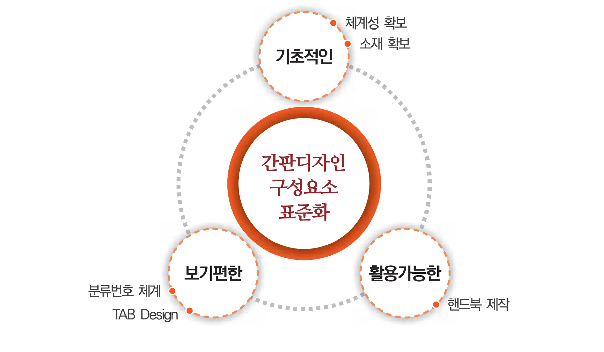
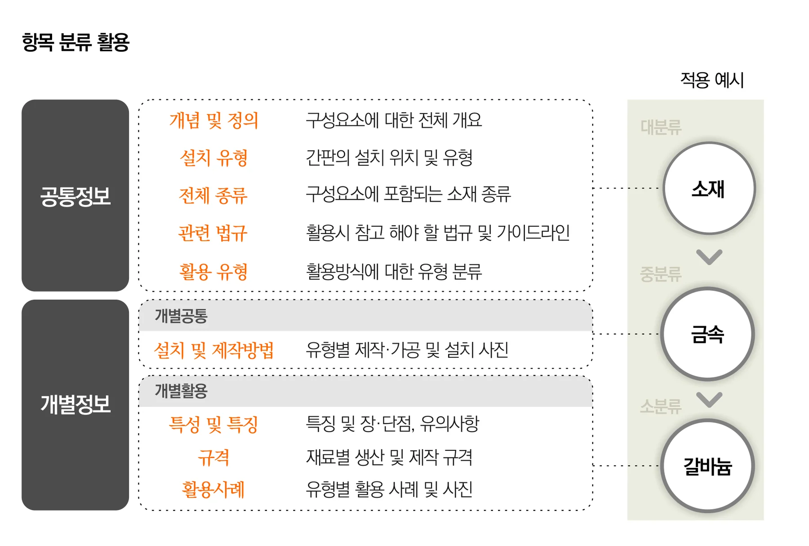
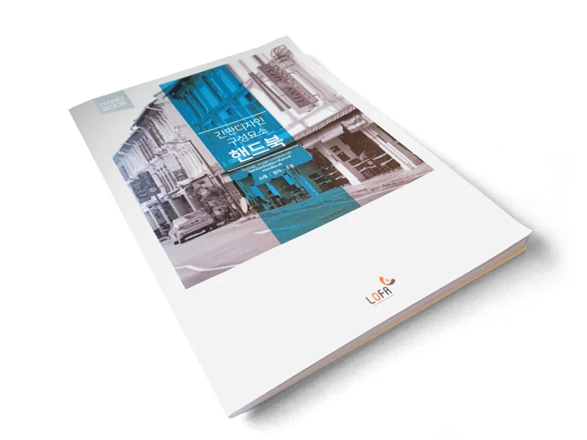

누구나 보기 쉬운 공공디자인 가이드라인
“누구나 보기 쉬운 공공디자인 가이드라인”
누구나 쉽게 공유할 수 있는 한국옥외광고센터의 간판 디자인 가이드라인
“좋은 공공디자인 가이드라인은 이해하기 쉬워야 하고 다양한 디자인 유도를 할 수 있어야 한다”
[ 간판 디자인 가이드라인의 구성 전략 ]

소위 디자인 전문가들이라는 분들이 범하는 실수 중에 하나는 대상자들의 수준을 고려하지 않고 연구와 소통을 하는 것입니다. 특히 가이드라인 등의 디자인 지침서와 같은 경우 실질적인 사용을 위해서는 쉽게 읽히고 이해될 수 있는 내용으로 구성되어야 합니다. 한국옥외광고센터에서는 이와 같은 목적을 지니고 간판을 구성하고 있는 요소별로 기본적인 내용에 대해 체계적인 분류를 적용한 표준화 매뉴얼 북과 핸드북을 제작하였습니다. 표준적이고 체계적인 정보제공을 위해 간판디자인을 구성하고 있는 요소들, 바탕소재, 정보를 알리는 문자, 효과를 극대화하는 조명, 이 세 가지 분류를 통해 정보를 쉽게 표현하여 비전문가들도 간판 디자인과 제작 시 활용할 수 있게 하였습니다. 특히 연구 내용을 압축해서 담은 ‘간판디자인 구성요소 핸드북’은 휴대가 간편하도록 구성되었고 시각중심의 구성으로 간판과 관련된 모든 사람들이 쉽게 이해할 수 있게 하여 공공디자인 가이드라인으로서 실질적으로 활용될 수 있도록 하였습니다.
[ 간판 디자인 가이드라인의 구성 ]

가이드라인을 구성하는 첫 번째 원칙으로 간판을 디자인하고 제작 및 설치하는 복잡한 과정을 정리하여 유형별 공통정보, 개별정보로 크게 분류 한 뒤 각 재료별 정의, 특성, 규격, 취급상의 유의사항, 제작과정 등을 정리하였는데 이러한 분류 체계를 통해 소재의 성질을 쉽게 파악하고 원하는 정보에 대한 접근이 쉽도록 하였습니다.
두 번째로는 분류된 기호체계를 통일하여 찾기 쉽고 소통하기 쉬운 공통 지표를 구성하였습니다. 간결성으로 타 분야에서 사용되고 있는 분류 정보 시스템을 분석 연구하여 간판표준화매뉴얼에 최적화된 분류정보를 정립하고 적용하였습니다. 이 분류 정보는 후에 재료들의 증가에 있어서 추가가 가능하도록 되어있습니다.
세 번째로는 다양한 창조를 지원하는 가이드라인입니다. 기존 간판 관련 정보들의 표준적인 데이터가외에 관련된 분야인 건축, 인테리어, 조경 등에서 사용되는 소재 중 간판디자인에 활용할 수 있는 것들을 발굴하여 다양한 디자인 개발을 할 수 있도록 하였습니다.
마지막 전략으로 실용성입니다. 그동안 다른 공공디자인 관련 연구 사업들의 결과는 책장에 보관되어지는 경우가 많았습니다. 하지만 이 연구는 이론적 학술연구를 지양하고 실질적으로 적용되고 사용되어 간판디자인 발전에 기여하기 위한 목적이 커 효용성을 고려해 핸드북도 같이 제작하였습니다. 매뉴얼 북에서 담았던 각 소재들의 주요 정보들 중에서도 필수 정보들만 정리해 표 형태로 정리하여 정보 전달성을 높이고 주 사용 규격과 활용 사례를 제시하여 현장에서의 이해도를 확보할 수 있도록 하였습니다.
[이해하기 쉬운 옥외광고 디자인 핸드북]

향후 표준화 연구의 지속성을 통해 구성요소의 종류를 폭 넓게 확보해 나가고 또 스마트시대에 맞게 어플리케이션 개발 연구도 진행하게 된다면 활용의 빈도는 넓어지고 많은 사람이 공유함으로써 디자인 개발에 가속이 붙고 폭이 더욱 넓어질 것으로 생각됩니다.
(자료제공 : 이미선 연구원 한국옥외광고센터 경관디자인팀 mslee@lofa.or.kr))
이 글의 판본과 수록 정보 ＋
집필 폴더의 자료; 실제 작성자·집필 기여 미확정
원고·초안의 표현을 보존해 수록한 온라인 편집본입니다.
- 수록 자료
- 기고문 4_누구나 보기쉬운 옥외광고 디자인 가이드라인.hwp
- 자료의 날짜 단서
- 기록 없음 · 실제 발표일과 다를 수 있습니다.
- 관련 파일
- 1개 / 서로 다른 본문 1종